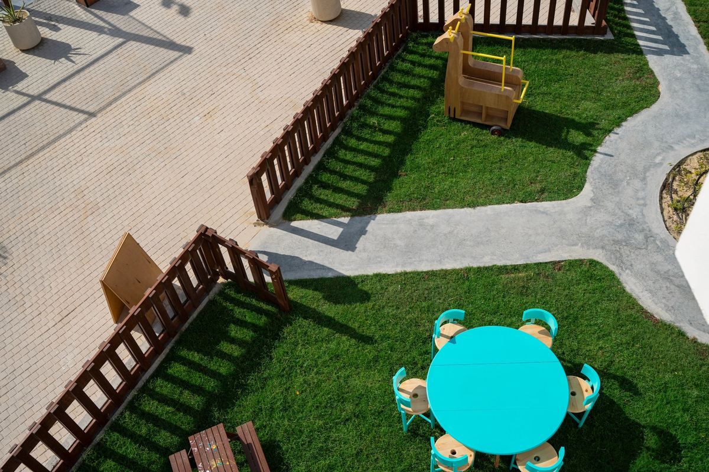
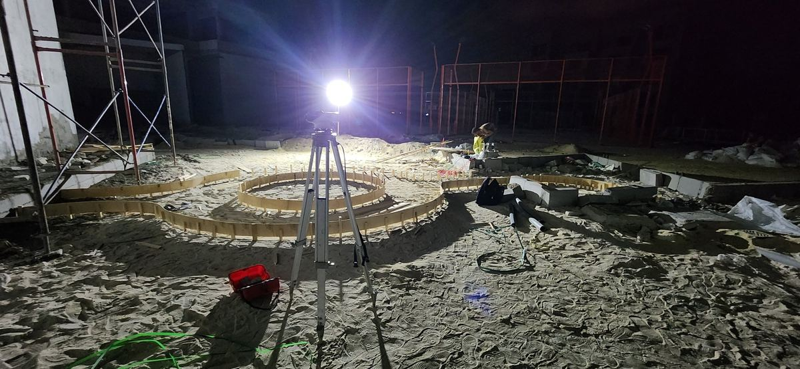
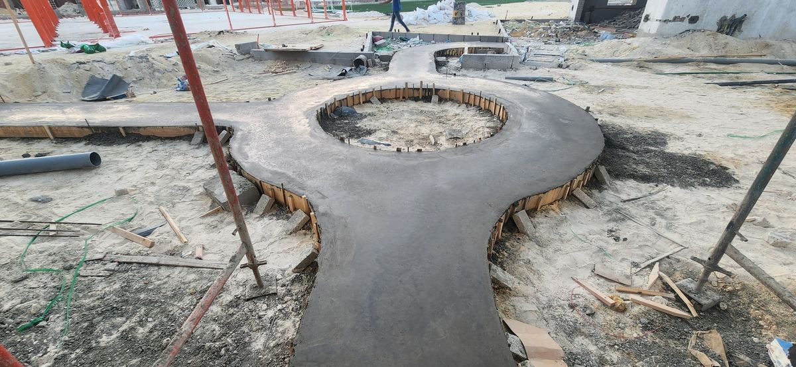
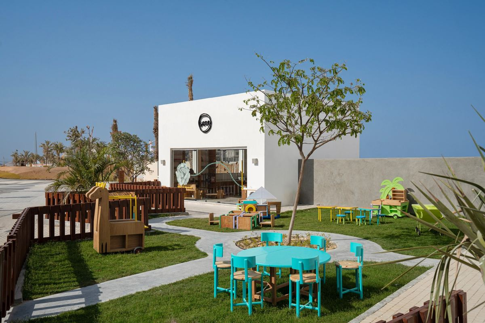
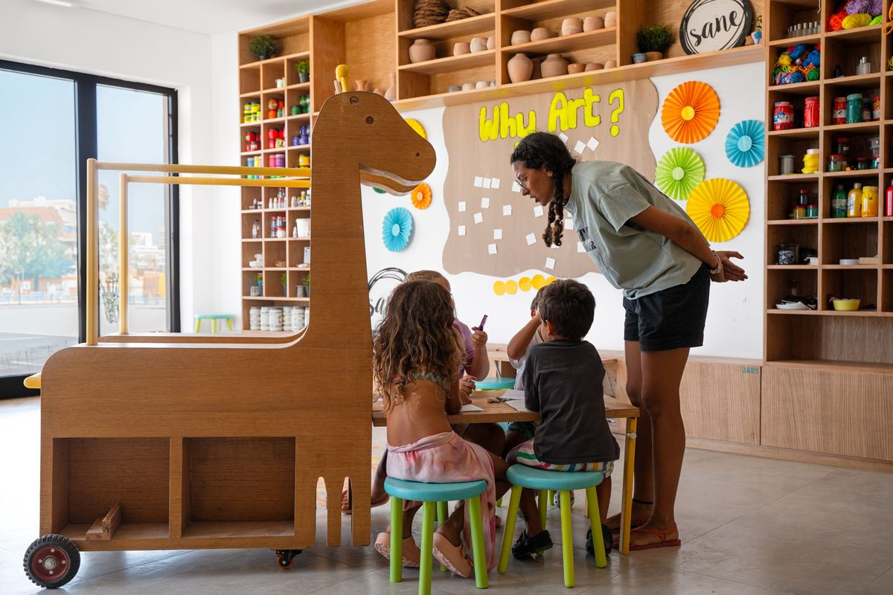
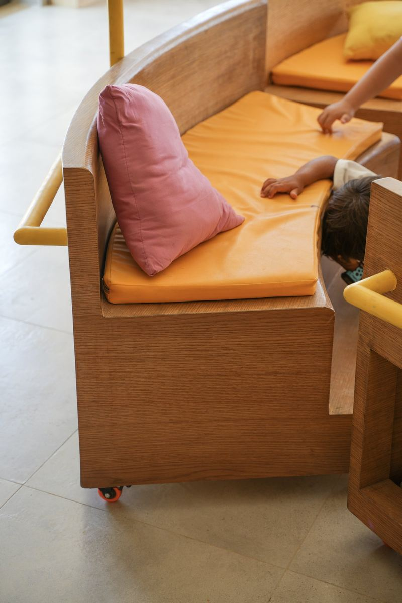
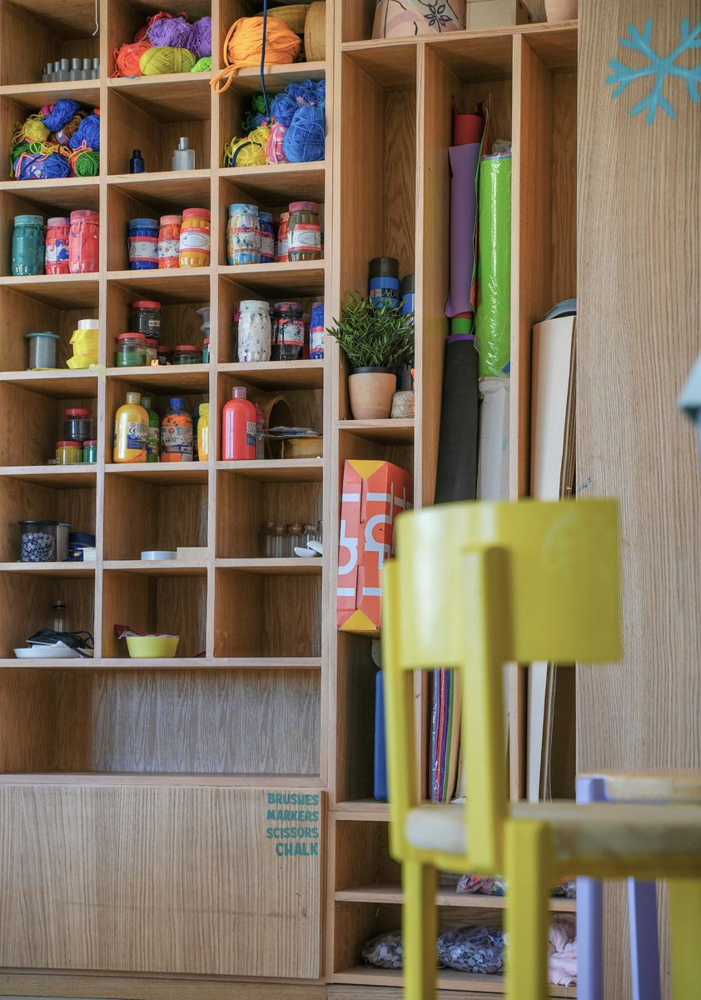
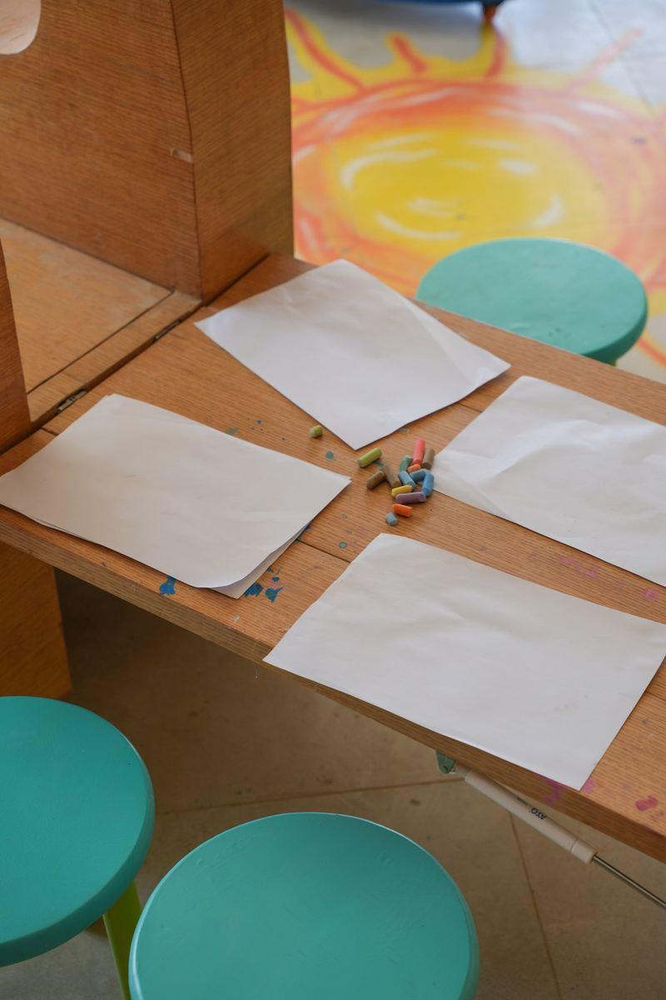
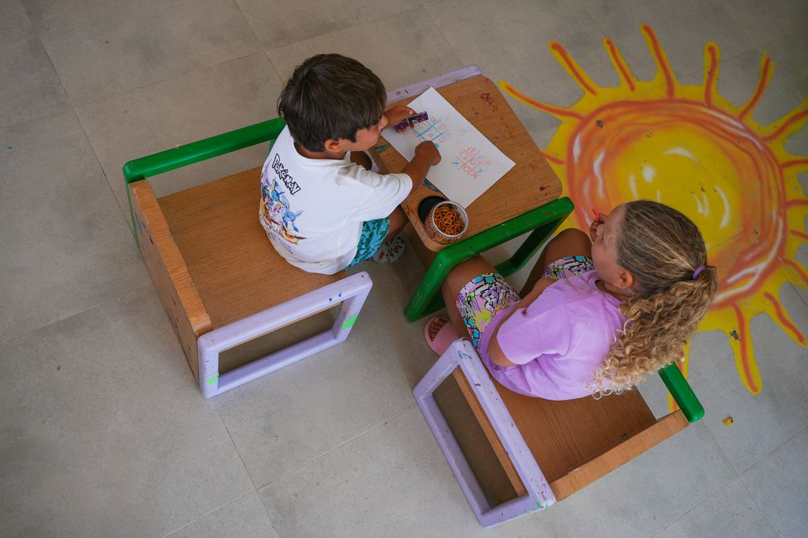
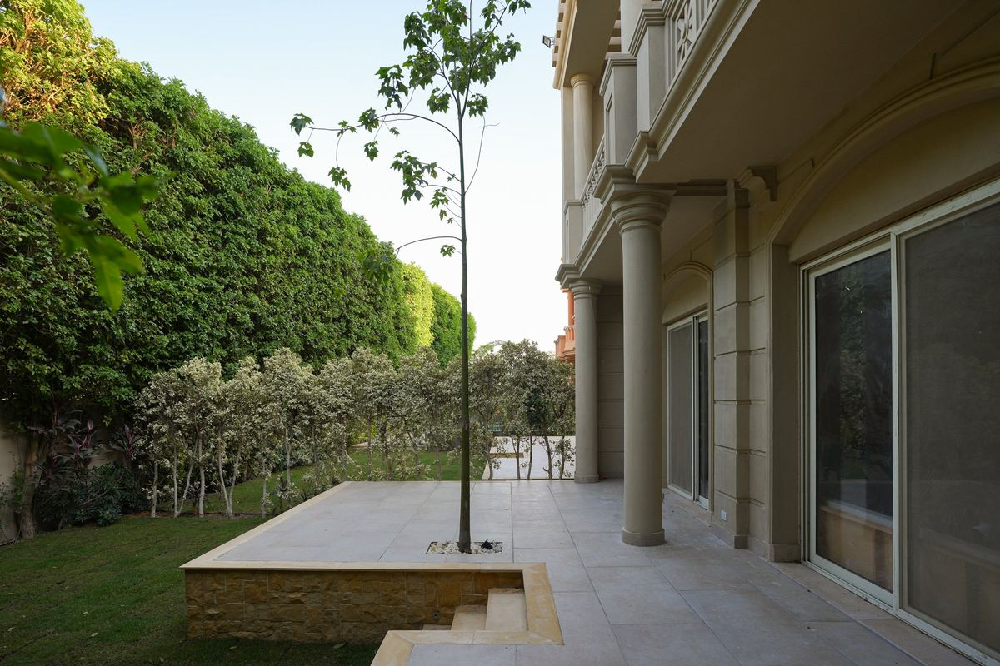

Kids' art space · Masyaf & Almaza, North Coast
A garden classroom for a kids' art space: a circular path poured on site, turf, timber fencing and custom children's furniture.
From bare site to finished space.








Tell us about your space. We'll draw it, price it, and build it.
WhatsApp ushello@ikdu.build